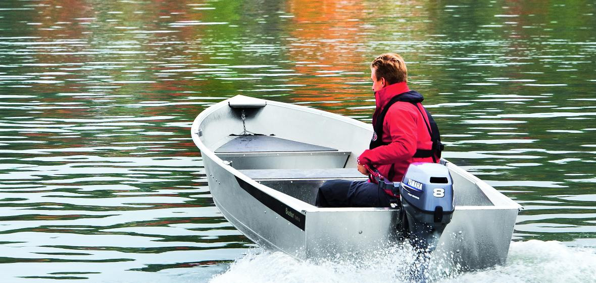
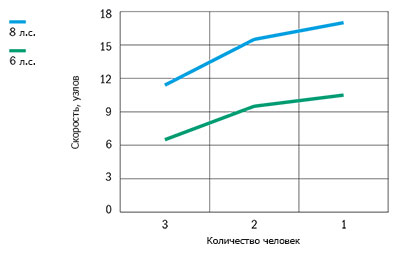

Катер Buster Mini (Бустер Мини)
Buster Mini (Бустер Мини) – небольшая, алюминиевая лодка, удобная как при гребле на вёслах, так и при установке бензинового или электрического подвесного мотора. Лёгкий Buster Mini, имеющий массу только 100 килограмм, легко переносить из воды на берег. Для зимнего хранения достаточно положить лодку под дерево. Непотопляемая алюминиевая лодка – безопасная в использовании и для начинающих водителей.
Buster Mini (Бустер Мини) отлично подходит для походов выходного дня, рыбалки, перевозки небольших грузов, а также как маленький помощник большого Buster. Лёгкому движению дождь не помеха. На лодке установлен осушающий клапан Easy Bail, через который попавшая внутрь дождевая вода свободно выходит во время движения через сливной клапан. Прочная лодка, не требует отдельного дополнительного ухода, кроме мытья обычной водой. Buster Mini (Бустер Мини) – не требующий особого внимания компаньон, особенно при сравнении с лодками из стеклопластика.
Buster Mini (Бустер Мини), несмотря на свой небольшой размер, достаточно просторный в своём классе, легко перевезёт троих человек вместе с грузом. Три мягких сиденья обеспечивают комфорт путешественникам и на небольшой скорости. Buster Mini (Бустер Мини), единственная в семействе Buster лодка, специально спроектированная для гребли на вёслах. Лёгкий Buster Mini (Бустер Мини) удобно переносить вдвоём, ещё легче его перевозить на трейлере без тормозов.
Технические характеристики катера:
| Параметр | Buster Mini |
|
Длина |
3.88 м |
|
Ширина |
1.49 м |
|
Масса (Без двигателя) |
111 кг |
|
Вместимость |
3 человека |
|
Рекоменд. мощность двигателя |
2 - 8 л.с. |
|
Осадка при полной нагрузке |
0,18 м |
|
Максимальная скорость |
17 узлов |
|
V-угол дна |
10° |
| График скорости | |
|  | |
Стандартное оборудование:
- Комплект уключин
Дополнительное оборудование:
- Комплект, уключины и вёсла